Postdoctoral Researchers
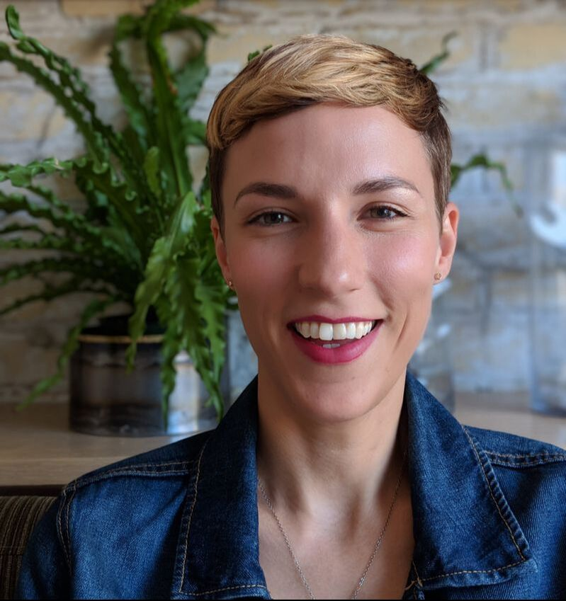
Amanda Gorton (2019-2022 CBS Grand Challenges Postdoctoral Fellow)
currently: Minnesota Pollution Control Agency
I’m an evolutionary biologist broadly interested in the ecological and evolutionary consequences of climate change and urbanization on plant populations. During my PhD, I used large field experiments and population genetics to investigate adaptation in common ragweed in response to urbanization and historical climate across its range. As a Grand Challenges in Biology Postdoctoral Fellow, I will be continuing to work with ragweed in urban environments, combining mathematical biology, environmental epidemiology, and public policy. Specifically, in the Shaw Lab, I will be developing an individual-based model to understand how heterogeneity in urban landscapes shapes the evolution of pollen dispersal.
Lauren Shoemaker (2017-2018, EEB postdoctoral reseacher)
currently: Assistant Professor, Botany, University of Wyoming
I am a spatial ecologist who uses quantitative tools to examine how complex ecological dynamics—including landscape structure, disease spread, and movement behavior—alter population and community patterns. To do so, I use a combination of analytical and simulation techniques coupled with experiments. I am especially interested in how stochasticity and nonlinear feedbacks together can create predictable patterns in abundances and community composition across a wide range of scales.
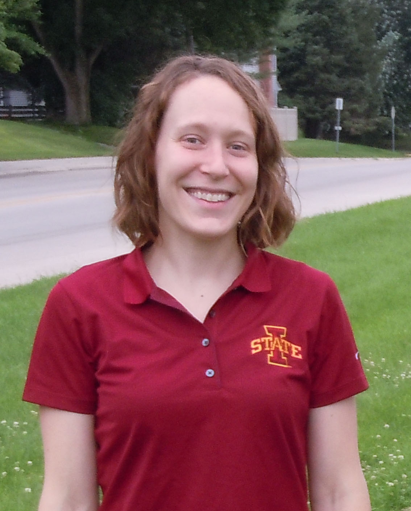
Lauren Sullivan (2014-2018, EEB postdoctoral researcher)
currently: Associate Professor, Department of Plant Biology, Michigan State University
previously: Assistant Professor, Biological Sciences, University of Missouri [2019-2022]
I am broadly interested in how environmental factors influence the reproduction and dispersal of organisms, and the subsequent consequences for population and community dynamics. During my PhD at Iowa State, I worked with the Nutrient Network to investigate how nutrient additions influence the dispersal abilities of grassland plants. As a postdoc, I will be developing theoretical models related to movement ecology. I am interested in examining how resource-dependent dispersal affects the competition and coexistence of organisms with various dispersal syndromes, in a spatial context.
Topher Weiss-Lehman (2017-2019, EEB postdoctoral researcher)
currently: Assistant Professor, Botany, University of Wyoming
In my research, I investigate the role of rapid evolution in shaping the dynamics of range boundaries. For my dissertation, I focused on the process of range expansion and the role of spatial evolutionary mechanisms in driving changes to fitness and dispersal at the expansion edge. By using a combination of theoretical models and experimental microcosms, I tested the effect of spatial evolutionary mechanisms on the speed and variance of range expansion. In my postdoctoral research, I will test the interaction of these spatial evolutionary mechanisms with the changing selection pressures of climate change and the resulting shifts in range boundaries. In particular, I am interested in the interaction between the spatial genetic structure of a species’ stable range with the spatial evolutionary mechanisms inherent in range shifts due to climate change.
Graduate Students
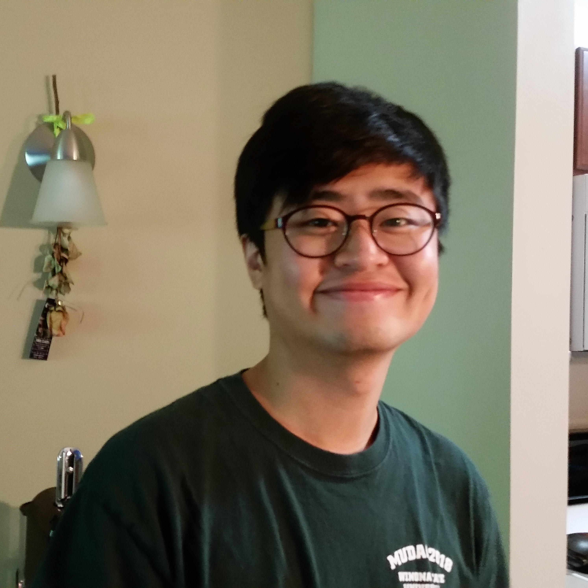
Dennis Kim (2019-2024 Graduate Student, EEB)
currently: postdoctoral researcher, University of Minnesota
As a PhD student, I want to advance our knowledge on how to link both theoretical and practical approaches to the development of ecology. Currently, I am interested in how interactions among individuals of the same species and environmental changes affect animals’ decision-making on their dispersal patterns. I am also interested in how animal movement determines individual fates, which may allow populations to adapt to environmental changes.
Thesis: Exploring the Hidden Drivers of Animal Movement: Traits, Disease, and Memory
Naven Narayanan (2018-2024 Graduate Student, EEB)
currently: postdoctoral researcher, National Centre for Biological Sciences
I joined the Shaw Lab in Fall 2018. I’m interested in how mutualistic (positive) species interactions shape the ecology and evolution of species dispersal. I answer my questions using analytical work and numerical simulations of Integro-difference Equations (IDEs) and Partial Differential Equations (PDEs). Both IDEs and PDEs are great tools to model spatial-temporal ecological processes. More recently, I'm collaborating with Dr. William Harcombe to test some of my modelling results in an experimental microbial mutualism.
Thesis: Mutualism as driver of species’ spatial dynamics and their coexistence
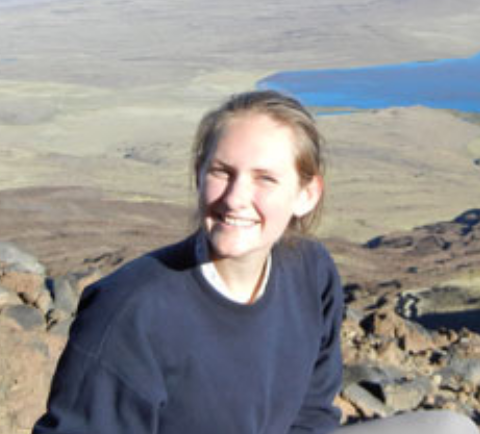
Evelyn Strombom (2015-2017, EEB grad student)
currently:
I am excited by the rules underlying collective behaviors, how they affect and are affected by the environments in which they operate. As an undergraduate at Swarthmore College, I studied Biodiversity and Ecosystem Functioning and Behavioral Endocrinology. My interests since then have grown increasingly applied, with recent projects including the landscape of forest landholder decision-making (Smithsonian Conservation Biology Institute) and cooperative strategies for sustainable fisheries management (Beijer Institute of Ecological Economics).
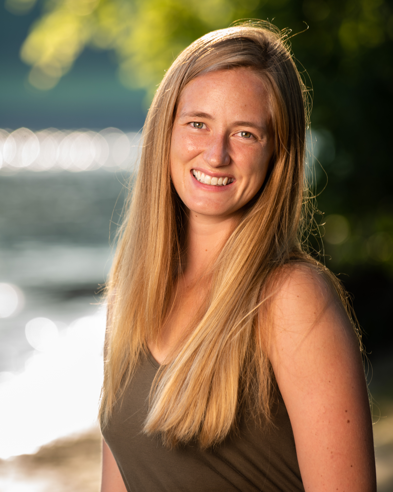
Martha Torstenson (2020-2025 Graduate Student, EEB)
currently: postdoctoral researcher, Dartmouth College
Throughout my PhD I plan to use theoretical tools to understand how migratory species can be expected to respond to climate change. I am interested in how animals respond to changes in environmental variability and stochasticity at different scales, from increases in severity and frequency of extreme climate events to shifts in seasonal patterns. I would like to investigate how migration as a strategy interacts with these changes to shape population dynamics.
Thesis: Consequences of animal migration in an era of global change
Steph Varghese (2024-2026 Graduate Student, EEB)
currently: graduate student, EEB, University of Minnesota
I am interested in reconciling competing hypotheses of major evolutionary transitions. During my PhD, I
hope to explore the role of facilitative interactions for driving novel advancements in biological
organization. By combining mathematical modeling approaches in the Shaw Lab with experimental evolution
of microbes in the Travisano Lab, I hope to contribute to greater clarity on how simple things gained
incredible complexity over billions of years on earth.
Undergraduate Students
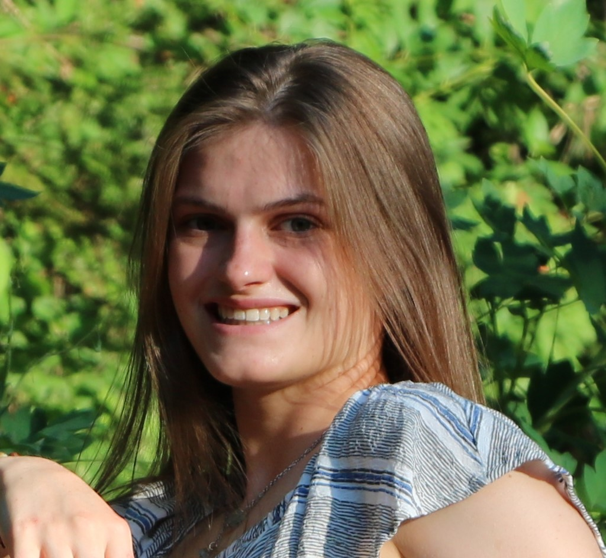
Ruby Ales (2022-2024, Undergraduate student, Biology and Mathematics)
currently:
I am an undergraduate student studying biology and mathematics. I joined the Shaw lab in Fall of 2022 to shadow PhD candidates and to do directed reading of primary literature in preparation for a senior-year thesis. Within the lab, my interests lie mostly in habitual movement, and my current directed project focuses on migration in birds and the effects of climate change on those patterns.
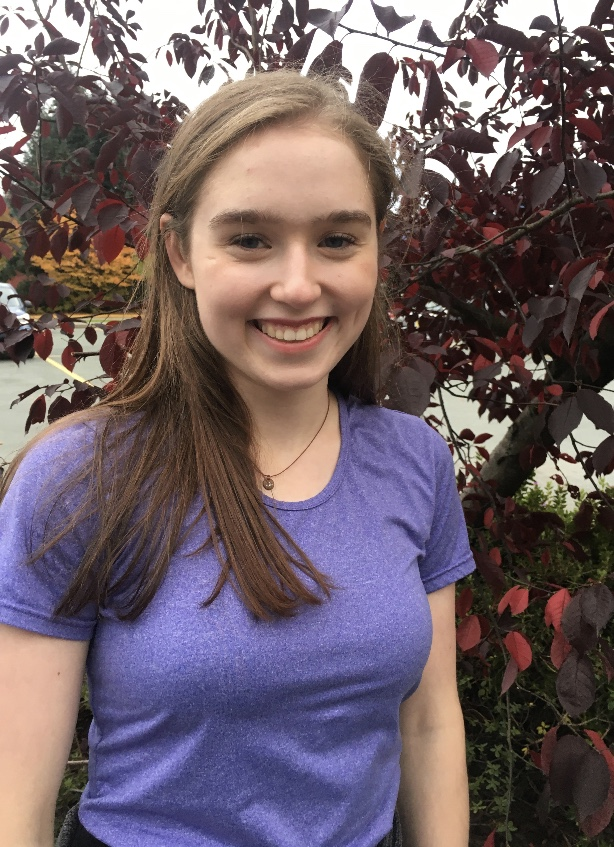
Laurie Balstad (2019 & 2020, summer research project)
currently: Postdoctoral researcher, University of British Columbia
previously: Graduate Student, Population Biology, U.C. Davis
previously: Undergraduate Student, Mathematics and Biology, St. Olaf
I am a student at St Olaf studying at Mathematics and Biology, and at the Shaw lab, I am working to create a model that analyzes how infection intensity influences migratory behavior.
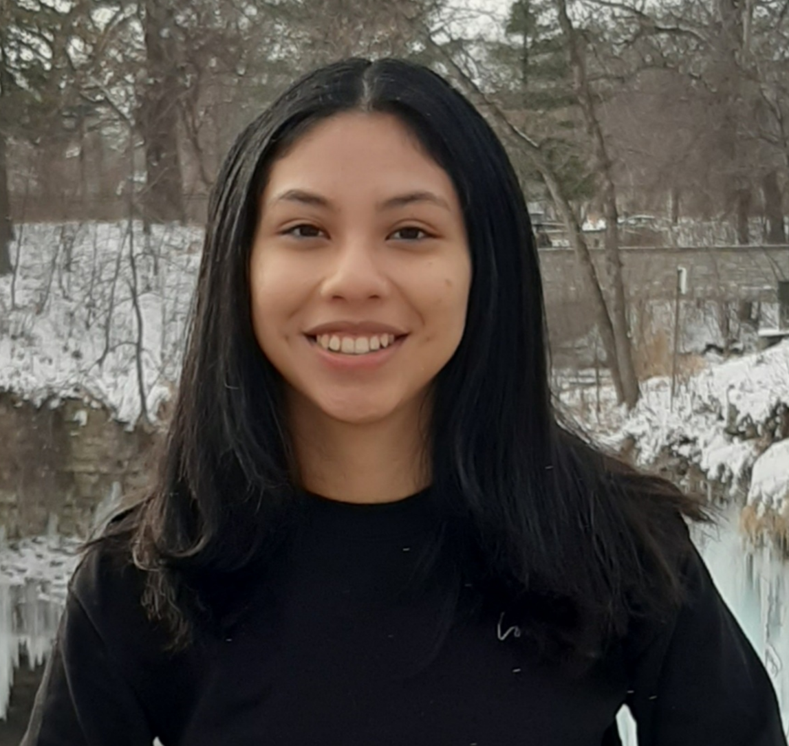
Elena Holmes (2022, research project)
currently:
I am at the U of M for Animal science, was interested in the ecology lab and helping out with a research project.
Morganne Igoe (2016-2017, undergraduate honors thesis)
currently: Mathematical Statistician, US Department of Defense
previously: Graduate Student, Math, University of Tennessee-Knoxville [2017-2022]
I am a senior math major and bio minor here at the U. I am interested in learning more about the different approaches to mathematical modeling in biology and ecology. I am especially interested in disease modeling and will be working on my honors thesis in that area.
Thesis: A Comparison of Individual-Based and Mean Field Model Approaches as Applied to Vector-Borne Pathogen Spread
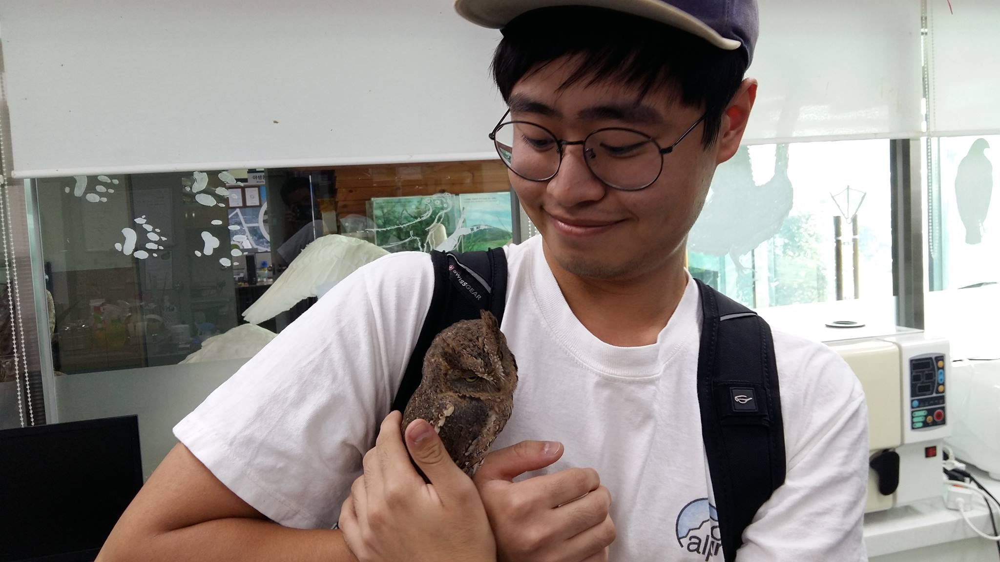
Dennis Kim (2018, summer research project)
currently: postdoctoral researcher, University of Minnesota
previously: Undergraduate Student, UMN-Morris
I am interested in how wildlife populations respond to change of species habitat selection and migration patterns. My goal specifically, is to develop and build different types of quantitative and theoretical models to advance our understanding of ecology.
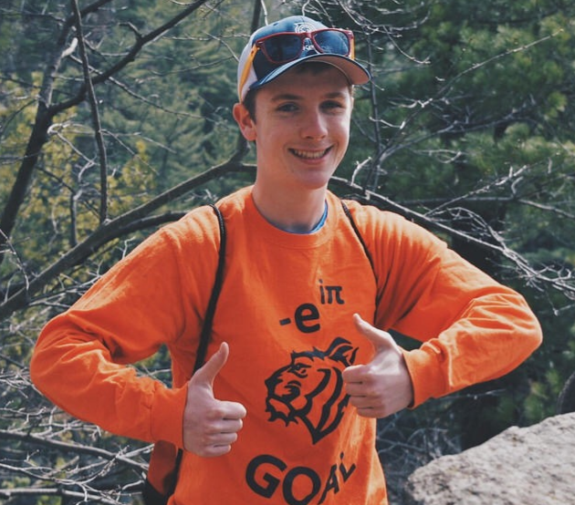
Damon Leach (2018-2020, Undergraduate Student, Statistics)
currently: Data Scientist, Pacific Northwest National Laboratory
previously: masters student, Biostatistics, University of Minnesota
I am an undergraduate student here at the U studying statistics with biology. For my undergraduate research project in the Shaw Lab, I am analyzing the role of social and mating structures as they relate to small populations. I want to see if there is a relationship between those characteristics and the likelihood that a species will go extinct using underlying principals mathematical models to accomplish this goal.
Thesis: Stochasticity in mating and group structures drives extinction risk
Peter Lutz (2022-2024, Undergraduate student, EEB and Computer Science)
currently: Graduate Student, EEB, UMN-Twin Cities
I'm an undergraduate working on a summer research project related to mutualisms and dispersal. My academic interests are ecology, computer science, and mathematical modeling. Before becoming a student in 2020, I worked as a chef at various restaurants in Minneapolis.
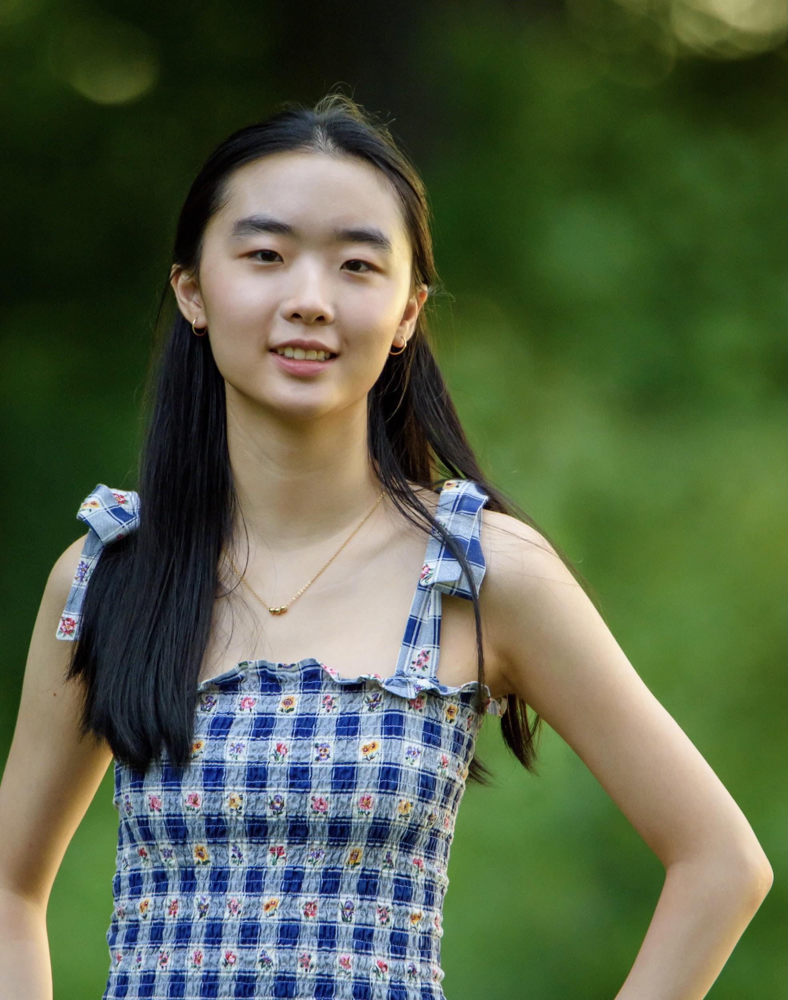
Cece Shao (2022-2024, Undergraduate student, Biochemistry and Computer Science)
currently: graduate student, Tri-Institutional Computational Biology and Medicine program
I am an undergraduate student working on a REU concerning virulence in migratory populations. I am broadly interested in computational and mathematical approaches to research in the biological sciences.
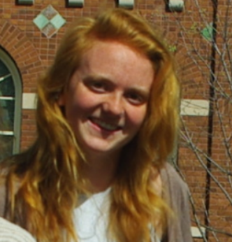
Julie Sherman (2016-2019, Undergraduate Student, Mathematics)
currently: PhD student, Mathematics, University of Utah
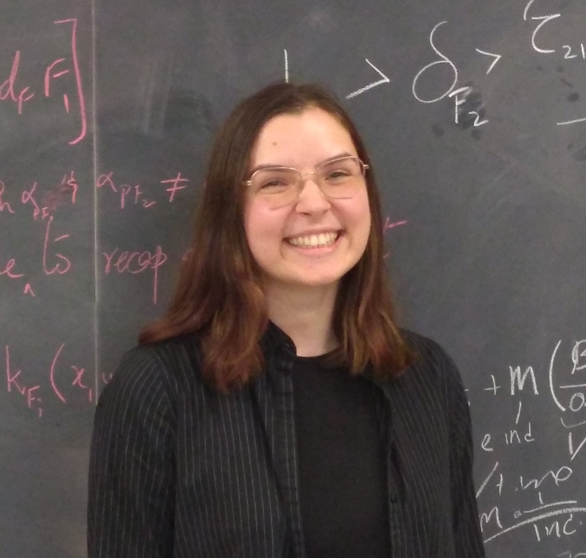
Jessica Valiarovski (2023-2024, Undergraduate student, Biochemistry and Computational Biology)
currently:
I joined the Shaw Lab in Fall 2023. I am working to develop an epidemiological model to simulate how pathogen
evolution is affected by disease resistance and tolerance in migratory populations. My academic interests
are in mathematical modeling research and development. In particular, I am passionate about using models to
improve human health and sustainability.
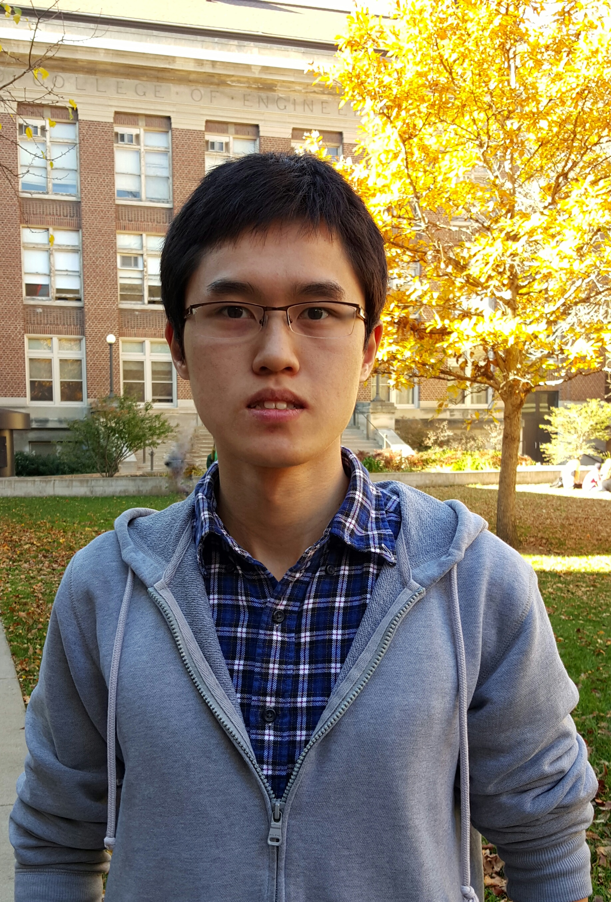
Jinchuan Wei (2015-2016, Undergraduate student, Math and Computer Science)
currently:
I am broadly interested in the questions involved applications of mathematics in biology and computer science.
As a math and computer science majors undergraduate student, I did research related to mathematical modeling
of Mycobacterium tuberculosis, data mining of higher order discriminative patterns and numerical analysis of
PDE. Outside academic area, I am also a gourmet and philosopher ;)

Yumna Yassin (2026, Undergraduate student, Neuroscience and Art)
currently:
During my stay in the Shaw lab I want to gain a new way of thinking through understanding theoretical
modeling and its applications. I will be expanding on an existing species interactions model by adding an
environmental factor. This model will be investigated through the relationship between jellyfish, small
fish, and ocean acidification.
Research Technicians
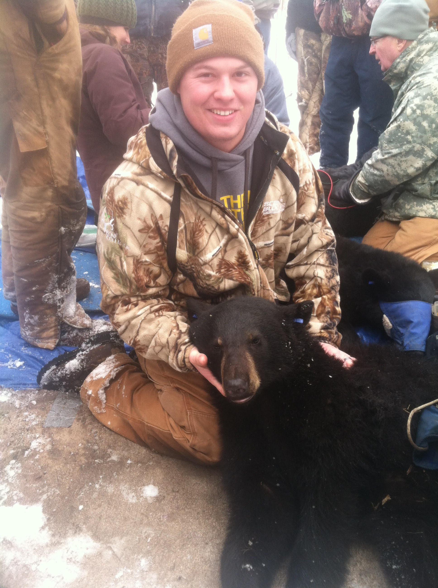
Dylan Jorgenson (2016 summer field technician)
currently:
I am originally from Henning MN and my major at MSUM is Ecology and Evolutionary Biology. Eventually I would like to work for the MN DNR so I can protect the outdoors that I enjoy so much. The prairie ecosystem is fascinating to me because of the possible diversity of this ecosystem and some of the very specialized niche's that those organisms live within.
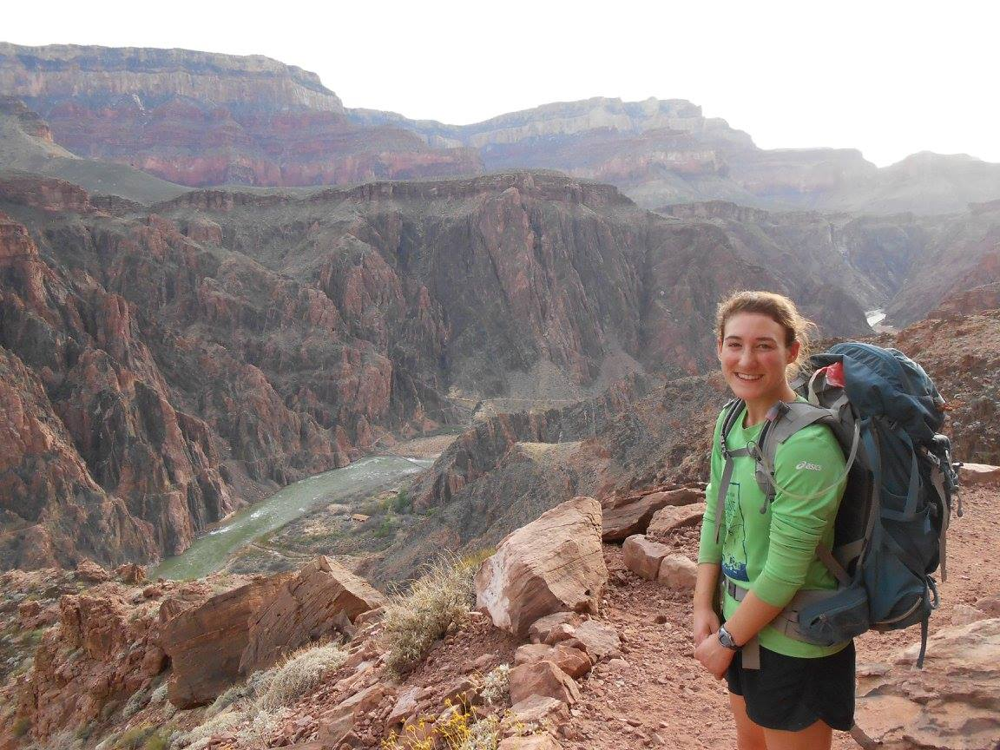
Jordan Pruszenski (2016 summer field technician)
currently:
previously: Educational Associate in Biology, Carleton College
Hi, I am Jordan Pruszenski and a recent biology graduate from Carleton College. I am in the lucky position to be fascinated by almost every aspect of ecology but I am especially interested in how global change is affecting ecosystem processes and how these alteractions will change the biotic communities that live in those ecosystems. I am originally from Anchorage, Alaska and love any activity that takes me outside especially running, Nordic skiing, and backpacking.
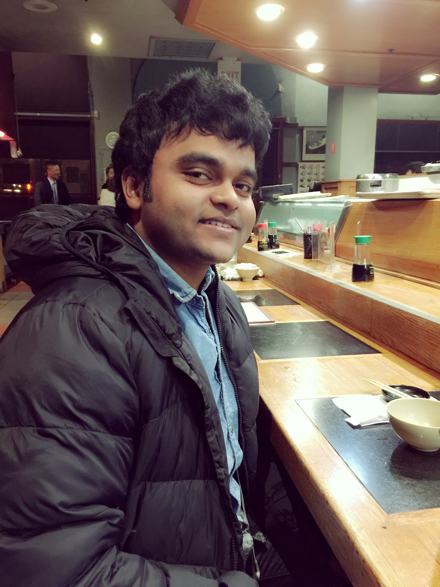
Himanshu Shekhar Sahoo (2016 summer research technician)
currently:
previously: Masters Student, Electrical Engineering, UMN
Hi, I am currently a Master's student at University of Minnesota. My specialization is in computer architecture in which we look for ways to improve the speed and efficiency of current generation CPU's and GPU's. In particular, I work towards finding more efficient scheduling policies in GPU's. Prof. Shaw's research interests fascinates me. It is amazing to see how mathematics can so accurately try to model organisms movement. It also leaves me motivated to come up with a more robust model that more accurately models organisms movement. My passion lies in table tennis, cooking, hiking, photography and playing guitar.
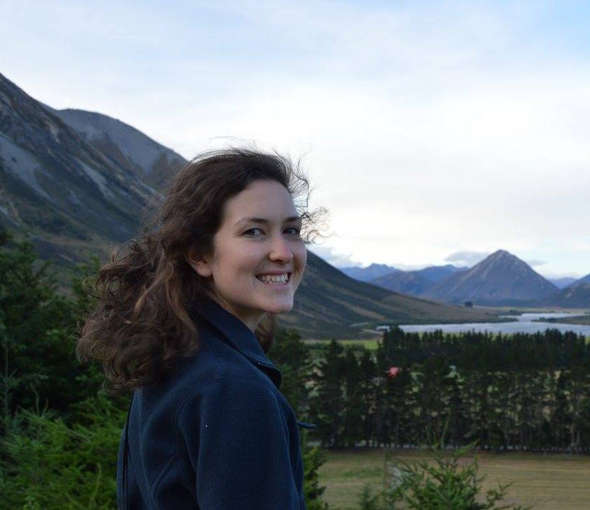
Katie Sperry (2017-2019, Research Technician)
currently: PhD student, Ecology and Evolutionary Biology, Northeastern University
I am supporting Dr. Sullivan's work on plant dispersal in both the field and the lab. My current projects include studying how remnant prairies act as seed sources for adjacent restored prairies, and developing models and tools to help conservation agencies leverage our research in their decision making. Very broadly, I am interested in understanding community assembly, and am excited to further my knowledge of theoretical ecology and modeling.
Honorary Lab Members
Narmin Ghalichi (2015 summer research project)
currently: postdoctoral researcher, Bowling Green State University
During the summer, 2015, I had a privilege to attend Allison Shaw's lab and get introduced to the intriguing world of simulations. I am curious about educational possibilities that application of simulations in Ecology has to offer for K-12 curriculum.
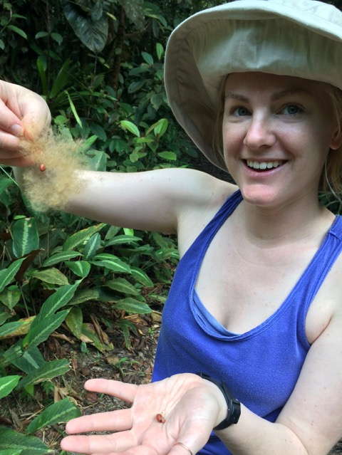
Lindsay Leverett (2016 & 2018, visiting graduate student)
previously: PhD student, Duke University
currently: Academic Editor, Research Square
My dissertation research considers how ontogeny and phenology influence the outcomes of biotic interactions. I am particularly captivated by systems in which positive and negative interactions occur within the same generation or vary across years, and I want to understand the ecological and evolutionary consequences of these patterns. I am currently using simulation models to explore the interplay between seed dormancy, germination order, and density dependence with Allee effects, and I’m visiting the Shaw lab this fall to learn more about modeling feedbacks between ecology and evolution.
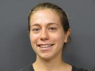
Kate Meyer (2015-2019. Graduate Student, Mathematics)
previously: postdoctoral researcher, Cornell University (2019-2020)
currently: Assistant Professor, Carleton College, 2020
I am interested in what the notion of resilience -- a popular term in ecology and sustainability studies -- might mean mathematically. Through a reading group organized with Dr. Shaw in the spring of 2015, I learned more about the uses and meanings of resilience in ecology. I'm now working to define resilience in dynamical systems models, and translating this idea across disciplines is proving to be an interesting and non-trivial task!